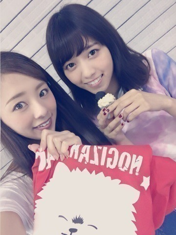
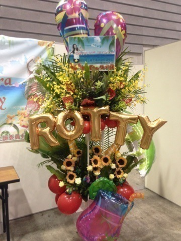

| 2016/07 11 Mon | ～21歳の生誕祭～ |
ありゃ♫ 昼間からギター弾いてたら右手の人差し指のネイルが剥がれたよ。
七瀬流石... あのね，これ私がデザインしたTシャツなんだけど...

お気に入りポイントに真っ先に気づいてくれたよ。 鼻の上にある毛並。笑 犬を飼ってる、あるいはポメラニアンを飼ってる方は分かってくれるよね？笑
目と目の間めちゃ可愛いよね♡
Tシャツのデザインを説明しますと，私はポメラニアンが大好き，実際飼っていた．それプラス，乃木坂は白いポメラニアンに絡みあるでしょー！！！ ギガちゃーーん♡♫
今回のTシャツ，今までで1番お気に入り。
そしてぇー、
昨日はアルバムの握手会だったよ。来てくれた皆ありがとう！！
アロハ～♫
めっちゃ私の好み分かってるや～ん♡
可愛いすぎるよぉぉ。
南国な雰囲気大好きなの。
ぜーんぶ，ファンの皆さんが手作りだったり，ウクレレ用意してくださったり，素晴らしいお花を飾ってくれたり... 手間暇かけて装飾してくれたの。（ ; ; ）♡
本当にありがとう。
手に持っている物は部屋の入り口に掛けて，机に置いてある貝殻，写真立て，サイコロ的な物は，TVの前に飾ってるよ♫
元々飾ってたお花はお手洗いの方に飾ることにしました♫
本当に素晴らしい生誕祭をありがとう。。

まぁ，親からの手紙には正直驚いたなぁ。 色々話したいけど，やめておくよー(^ ^)
...まぁ、「気づくのおそいよー！」って心の中でつっこんだかな(^ ^) 幼い頃の心の傷は少しずつ埋めていきます。
メンバーもファンの皆もだいすき。

コメント(211)
2016/07/11 14:00